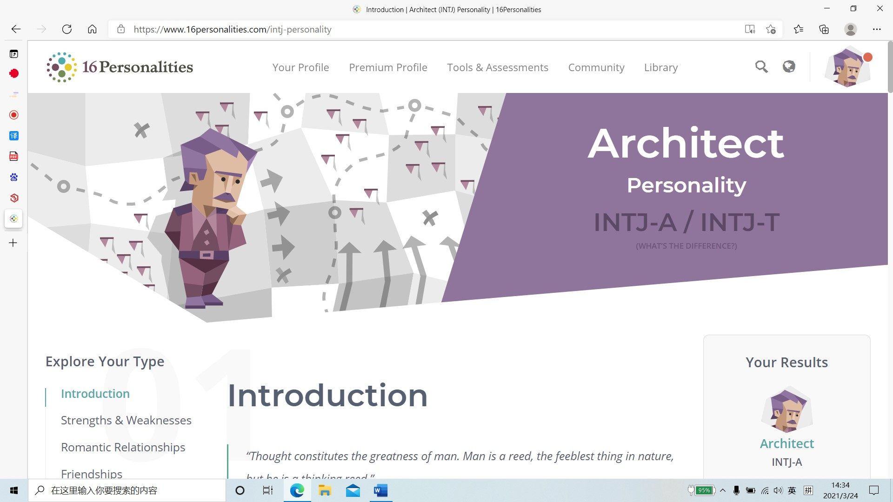
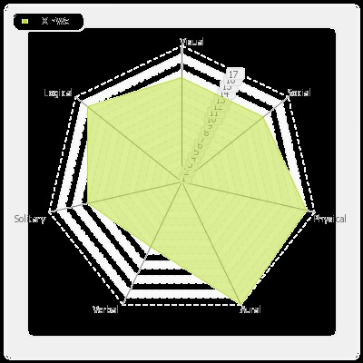

Hi guys, my name is Xinwei Li, a student who are interested in information technology. My student number is S3816123 which ‘123’ is easy to remember. So that my student email address is s3816123@student.rmit.edu.au.
I am an international student from china. There are great differences between Chinese and Western cultures. My study experiences before University are in China. However, I want to get higher education overseas. So that, I improve my English skill by studying IELTS. Therefore, I can speak Chinese and English. Now I expect to study computer language. In my childhood, when I watched science fiction film the screen shows the future technology had attracted my attention. In my past, I was modelling and understanding of systems programming, network engineering knowledge and information, but also the first time concerned about the new generation of technology products release. I self-taught assembled my first desktop computer, installed the windows system, and overclocking 9900k to 5.1ghz.
In my opinion, I was attracted by information technology when I was a child. I want to get more knowledge about IT, in order to change my life style. When I was young, I was very lucky to visit the science and technology exhibition of Hong Kong University of science and technology. Since then, I think it is a very cool subject. It can communicate with many science and technology authorities and widely used in people's lives. With the change of the times，more and more technology are used in normal life. For example, AI, big data, mobile payment has been widely used at present. On the other hand, IT attract me because of my dream jobs. I wish I can be a programmer, network engineer or data analyst.
In my third year of high school, I planned to study abroad. Although I had been to many countries before, I thought Australia was a beautiful place. After learning about the local universities, it is found that RMIT has a long history of education, advanced research in science and technology, comfortable learning atmosphere and high employment rate of graduates. These kinds of reasons make me choose RMIT to my first choice of University.
During my studies, I expect to learn knowledge about programming, big data analyse, the structure of computers, the network engineering etc.
Due to the development of digital society, data becomes more and more huge. A large number of data is far more than machine learning algorithm can give full play to her advantages. In order to speed up the training of neural network, engineers need to have breakthrough and innovation in the algorithm. In recent years, thanks to the performance optimization of CPU and GPU, the algorithm has obtained great innovation. So that, I am very interested in data, so deep learning attracts me for a long time.
This job needs master’s degree in Computer Science and Electrical Engineering. Proficient in modern neural network structure. And this job needs at least one deep learning framework experience. Proficient in C / C++ / Python Programming and mobile platform development. At the same time, it also needs strong interpersonal skills, and can actively communicate with members in the global team.
At present, I have causes in programmer, database system, and technology. As for me, there is still a long way to go. For example, the neural network structure and deep learning framework experience. They should be studied in the future, For the position, I will choose computer science and electronic engineering for my master's degree. In the future, understand, learn and be familiar with the structure of modern neural network. If there is another opportunity, participate in one or more deep learning researches to gain learning and working experience. Learn and be familiar with programming language and database system concept.
The result of 16 personalities is Architect personalities: INTJ-A/INTJ-T.
Link: https://www.16personalities.com/intj-personality
The result of learning style test
Link: https://learning-styles-online.com/inventory/results.php\
The result of Self Direct Search test: I/ Research type
Link: https://self-directed-search.com/
These three results let me know the positioning in a team. The Architect personalities reflect that I have a thirst for knowledge, design and implement plans in my field. I am both a visionary idealist and a mean realist. The two seem to be contradictory, but they do not affect my pursuit of my goals. I think a lot when I'm alone. It's a personality that yearns for truth. The results of learning test shows that I should do something with physical, aural, and logical jobs. I need to do it myself, pay close attention to everything around me, analyse and think, and finally come to a logical result. Finally, the result of Self Direct Search print that thinkers rather than doers, abstract thinking ability, thirst for knowledge, willing to use the brain, good thinking, not willing to do. Like to work independently and creatively. Knowledgeable, knowledgeable, not good at leading others. Thinking about problems rationally, doing things like precision, like logical analysis and reasoning, constantly explore the unknown field.
About the behaviour in a team, because this kind of character exists independently, even in the junior work, I feel annoyed because of the limitation of the team, and I am afraid to waste time by using meaningless meetings, and adhere to the useless principle. They need an ideal leader to reach their full potential. They need to use all their creativity, rich knowledge, and logical thinking to expand their responsibilities and develop their expertise. Few architects will choose the task of continuous interaction with the team or society, but this does not affect that architects are excellent collaborators, because their ability and reliability make them excellent collaborators.
To do this, they may need to prioritize a productive and respectful relationship with their manager. With the help of a small number of trusted teammates, their brainstorming can make the task or project more specific. Architects prefer to treat the people they work equally. They want to know more about the details of the task, such as what happened, when it happened, and prepare for their in-depth level of detail at any time.
In my project, I'm keen on game development, such as Unity, Unreal Engine, and Construct. I prefer to get more knowledge about graphic engineering, game design, database system, and computer science. Lots of things can be learned in University. So, my plan is divided into two steps. First of all, we should have excellent programming skills and solid algorithm knowledge. Learning and application in these two aspects will become the focus of learning. Second, learn to use the development engine. Whether it's learning engine or programming, the key is practice. For game development, not only do some necessary exercises, but also do some small projects, or game demo.
For a senior game enthusiast, to participate in the development of a game is a very exciting thing. So far, there are more and more Internet users, followed by more and more gamers. A 3A masterpiece brings strong interest to gamers. Cyberpunk 2077 is a very good example. From the game promotion to the official sale of the game, players can't wait to bring purchasing power. It also achieves the record of dominating steam sales list and the largest number of users online three days before the sale. The development of the game not only gives players enough love, but also has a huge breakthrough in the development engine and data survey. A good game development engine can bring better pictures and rich game playing methods. At the same time, it can also cooperate with a number of technology companies and music companies, and the benefits are far beyond my imagination.
For a game development team, there are usually the following positions: producer, planner, original painting, program, art, sound, and test. For IT students, they usually work hard on programs and tests. The development of the game is a long process, in order to stimulate the enthusiasm of players, designers and programmers usually have to invest a lot of time in production planning, character design, scene elements and so on. Generally speaking, the main process of making the game is divided into original painting creation, modelling, material and rendering, animation, special effects and other parts.
In terms of tools, nowadays, the successful development of a game cannot avoid a powerful game engine. For example, most of the games on the market are developed based on unity 3D and unreal engine. Not only that, unity engine is used in all aspects of life. For example, in ATM applications, AR / VR application scenarios combine the digital world with the real world. As a bridge between the two worlds, AR / VR content is driven by unity. On the other hand, the application of ACE field, for the designers, engineers, developers of ACE industry, unity design. In tachylogias, game development needs to learn graphic engine, sound engine, physical engine, game engine, artificial intelligence or game logic, game UI interface, game development tools, network engine development supporting LAN vs. Internet vs. war. For game developers, it is also very important to choose a good game server when developing games. The technology used in game server development depends on the type of game. Different game types require different game environments and use different technologies. But in essence, they are all the same. They are all facing data and processing data.
Game development is generally divided into the following three parts, game planning, program development, art. First, game planning, this aspect needs to consider plot planning, numerical planning, game front-end development and so on. Second, program development, which is generally the most critical part, is divided into client programming, server programming, engine programming and script programming. Generally speaking, the client needs to learn windows programming, and the server is woven by a large number of data and communication operations. Engine programming needs to understand DirectX, OpenGL, 3D mathematics. But the final thing is to learn C + +, data structure, socket programming, windows programming, database management, these are the most important.
If the project is successful, we will master some basic knowledge about game development and design, some knowledge about graphics engineering and 3D modelling. More importantly, if you are lucky enough to participate in the development and design of the game, you will learn a lot about the communication skills and practical operation experience you need in the company. Next, it will lay the foundation for the field of deep learning.